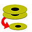

dirvish
Dieser Artikel wurde für die folgenden Ubuntu-Versionen getestet:
Ubuntu 14.04 Trusty Tahr
Zum Verständnis dieses Artikels sind folgende Seiten hilfreich:

dirvish  ist ein auf rsync und ssh aufsetzendes Programm, das Backups von entfernten Rechnern und Laufwerken erstellt, aber auch von lokalen Medien und Ordnern. Einer der Vorteile gegenüber "großen" Backup-Lösungen wie z.B. Bacula ist, dass es vergleichsweise schnell und unkompliziert einzurichten und zu administrieren ist. Dirvish kommt ohne graphische Benutzeroberfläche aus und erzeugt in jeweiligen Zielverzeichnis Snapshots der zu sichernden Quelle. Es eignet sich hervorragend als Backup-Lösung in kleinen "Rechenzentren" mit überwiegend Linux-Systemen. Windows-Systeme lassen sich zwar ebenfalls sichern, jedoch nur unverschlüsselt via Samba (
ist ein auf rsync und ssh aufsetzendes Programm, das Backups von entfernten Rechnern und Laufwerken erstellt, aber auch von lokalen Medien und Ordnern. Einer der Vorteile gegenüber "großen" Backup-Lösungen wie z.B. Bacula ist, dass es vergleichsweise schnell und unkompliziert einzurichten und zu administrieren ist. Dirvish kommt ohne graphische Benutzeroberfläche aus und erzeugt in jeweiligen Zielverzeichnis Snapshots der zu sichernden Quelle. Es eignet sich hervorragend als Backup-Lösung in kleinen "Rechenzentren" mit überwiegend Linux-Systemen. Windows-Systeme lassen sich zwar ebenfalls sichern, jedoch nur unverschlüsselt via Samba (rsync muss dann mittels Cygwin bereitgestellt werden).
Weitere Programme und Grundsätzliches ist im Artikel Datensicherung zu finden.
Installation¶
 mit
mit Konfiguration¶
Die zentrale Konfigurationsdatei auf dem Backup-Server ist die Datei /etc/dirvish/master.conf. Des Weiteren gibt es noch einzelne Konfigurationsdateien für die jeweiligen Backup-Jobs, dazu aber später. Hier ein Beispiel:
bank:
# /backup/dirvish/server
/backup/dirvish/laptop
# /backup/dirvish/firewall
exclude:
lost+found/
proc/
core
Runall:
# serverroot 03:00
# serverboot 03:00
# serverhome 03:00
# serveropt 03:00
# serverspare 03:00
# laptoproot 03:00
laptophome 12:00
# laptopopt 03:00
# laptopspare 03:00
# firewallroot 03:00
# firewallboot 03:00
expire-default: never
# keep the sunday backups forever, the dailies for 3 months
expire-rule:
# MIN HR DOM MON DOW STRFTIME_FMT
* * * * * +3 months
* * * * 1 never
#pre-server: /usr/local/sbin/dirvish-pre
#post-server: /usr/local/sbin/dirvish-post
#speed-limit: 10Zur Erläuterung dient die nachfolgende Tabelle:
| Optionen | |
| Abschnitt | Beschreibung |
bank: | Speicherort des Backups |
exclude: | globale Ausnahmen |
Runall: | regelmäßige Sicherung |
expire-default: | Standard-Aufbewahrungszeit der Backups |
expire-rule: | Aufbewahrungsregeln |
pre- und post-: | Skripte vor und nach dem Backup ausführen |
speed-limit: | Maximale Übertragungsgeschwindigkeit der Sicherung festlegen. Die Einheit ist Megabit pro Sekunde. Ist auch bei lokaler Sicherung sinnvoll, um auf dem Rechner flüssig arbeiten zu können. |
Benutzung¶
Für den Anfang soll erst einmal nur das Homeverzeichnis eines Laptops gesichert werden. Die Bezeichnung (engl. "Vault" oder Tresor) laptophome dient zur Identifikation. Die Verzeichnisse und Konfigurationsdateien werden auf dem Backup-Server von Hand angelegt[3][4][5]:
sudo mkdir -p /backup/dirvish/laptop/laptophome/dirvish
In diesem Verzeichnis wird die Konfigurationsdatei /backup/dirvish/laptop/laptophome/dirvish/default.conf für dieses Vault erstellt:
client: laptop
tree: /home
xdev: true
index: gzip
image-default: %Y%m%d
exclude:
flobian/downloadDamit wird vom Client (der Laptop) die Partition bzw. der Ordner /home in separate Verzeichnisse im Format YYYY-MM-TT gesichert. Nicht gesichert werden soll das Verzeichnis /home/<Benutzer>/download. Der Index des gesicherten Snapshots wird dabei mit gzip komprimiert.
Hinweis:
Standardmäßig benutzt rsync und damit auch dirvish bei nicht-lokalen Clients ssh. Dieses verschlüsselt die Verbindung, was innerhalb einer sicheren Netzwerkumgebung wie einem Home-LAN unnötig Geschwindigkeit kosten kann, insbesondere bei Geräten mit schwachen CPUs wie den meisten NAS (Network Attached Storage). Um stattdessen eine unverschlüsselte Verbindung zu einem rsync-Daemon auf dem Zielsystem aufzubauen, stellt man dem Pfadnamen in tree: einen Doppelpunkt voran. Zusätzlich muss man den betreffenden Modulnamen aus der /etc/rsyncd.conf des Zielsystems vor dem Pfad angeben. Im obigen Beispiel also tree: :modulname/home. Nun erzeugt dirvish die Zieladresse im nötigen Format für rsync (user@host::modulname/pfad), so dass dieses sich mit seinem Daemon rsyncd auf dem Zielsystem verbindet.
Vor dem ersten Backup muss das Vault initialisiert werden:
dirvish --vault laptophome --init root@laptop's password:
Der Client muss über den angegebenen Namen im Netzwerk erreichbar sein. Um nicht jedes mal ein Kennwort eingeben zu müssen, sollte die Authentifizierung über Public-Keys eingerichtet werden.
Nach der Initialisierung - die je nach Menge der Daten eine Weile dauert - wird das Vault nun bei jedem dirvish-runall gesichert. Allerdings nur einmal pro Tag - nach vorgegebenen Zeitplan in der /etc/dirvish/master.conf.
Automatische Sicherung¶
Eine Datensicherung, die nicht regelmäßig durchgeführt wird, hat nicht viel Wert. Die Version von dirvish aus den offiziellen Paketquellen installiert standardmäßig einen Cron-Job [6] für eine tägliche Sicherung um 22:04 Uhr:
cat /etc/cron.d/dirvish
# /etc/cron.d/dirvish: crontab fragment for dirvish # run every night 4 22 * * * root /etc/dirvish/dirvish-cronjob
Dieser Cronjob führt ein dirvish-expire, gefolgt von dirvish-runall, aus. Falls /backup nicht gemountet ist, wird das vorher (automatisch) versucht.
Achtung!
Löschen (dirvish-expire) und Erstellen einer neuen Sicherung (dirvish-runall) dürfen sich auf keinen Fall überschneiden! Beide Jobs brauchen ggf. sehr viel Rechenzeit, und müssen daher mit zeitlich ausreichenden Abstand geplant werden.
Backups kontrollieren¶
Besonders nach dem Einrichten, aber auch danach sollte immer wieder kontrolliert werden, ob das Backup noch regelmäßig automatisch durchgeführt wird.
Im Vault-Ordner sehen die Backups dann so aus:
ls -al /backup/dirvish/laptop/laptophome
Ausgabe:
insgesamt 20 drwxr-xr-x 5 root root 4096 11. Jan 11:25 . drwxr-xr-x 5 root root 4096 7. Jan 14:27 .. drwxr-xr-x 3 root root 4096 7. Jan 14:23 20100107 drwxr-xr-x 3 root root 4096 8. Jan 22:04 20100108 drwxr-xr-x 2 root root 4096 7. Jan 14:23 dirvish
Da nur einmal alle Daten kopiert werden und bei den folgenden Kopien nur die Änderungen Platz verbrauchen, sind alle folgenden Kopien kleiner, es wird aber trotzdem das vollständige Dateisystem in den Ordner 20100108 und folgende abgebildet.
du -sch /backup/dirvish/laptop/laptophome/*
Ausgabe:
14G /backup/dirvish/laptop/laptophome/20100107 613M /backup/dirvish/laptop/laptophome/20100108 12K /backup/dirvish/laptop/laptophome/dirvish 15G insgesamt
Anhand der Verzeichnisse und ihrer Größe kann das korrekte Backup geprüft werden.
Nach diesem Beispiel mit laptophome können jetzt weitere Partitionen von laptop oder anderen Rechnern entsprechend konfiguriert werden.
Links¶
Backup leicht gemacht: Lokale und entfernte Sicherung mit Dirvish, Rsync und SSH
 - Blogbeitrag 08/2012
- Blogbeitrag 08/2012Datensicherung
mittels "rsync" und "dirvish", 07/2008dirvish Guide
- weitere AnleitungNutzung von rsync und dirvish per rsync-Daemon auf einem DiskStation-NAS von Synology
Datensicherung
 Übersichtsartikel
Übersichtsartikel
- Erstellt mit Inyoka
-
 2004 – 2017 ubuntuusers.de • Einige Rechte vorbehalten
2004 – 2017 ubuntuusers.de • Einige Rechte vorbehalten
Lizenz • Kontakt • Datenschutz • Impressum • Serverstatus -
Serverhousing gespendet von